Vnitřní energie
U = (EK + EP) celková soustavy částic
Vnitřní energie U termodynamické soustavy je součet kinetické energie všech částic (tepelný pohyb) a potenciální energie každé dvojice částic (vazby mezi nimi).
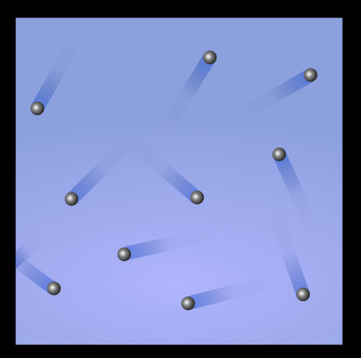
Změny vnitřní energie
Změna vnitřní energie ΔU může být způsobena:
1. prací
(vykonanou soustavou nebo na soustavě)
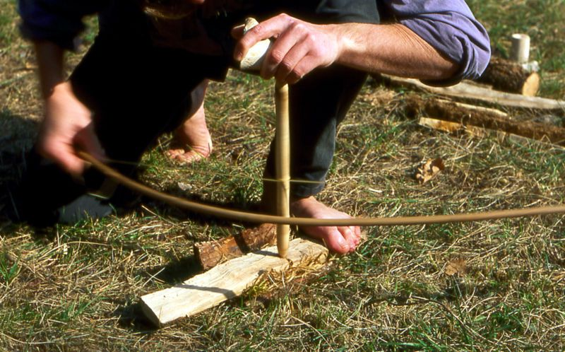
2. výměnou tepla
(mezi soustavou a okolím)
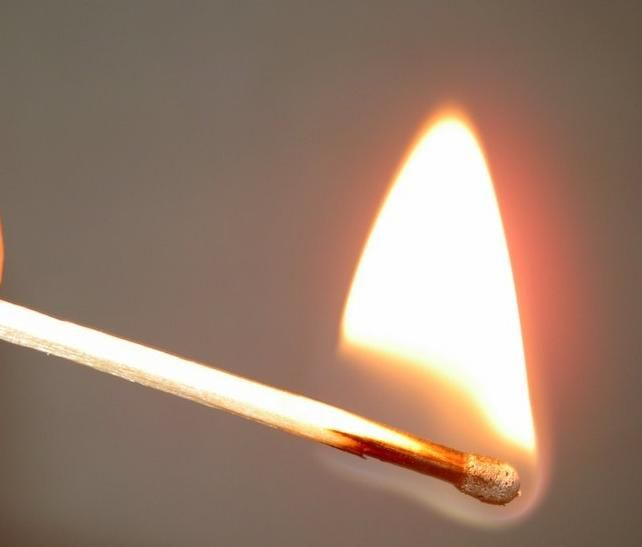
ΔU způsobená prací: ΔU = W
V izolované soustavě zůstává součet kinetické, potenciální a vnitřní energie všech částí soustavy konstantní.

ΔU způsobená výměnou tepla: ΔU = Q [Q] = 1 J
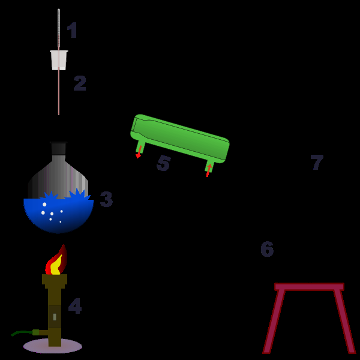
Tepelná kapacita a měrná tepelná kapacita
Tepelná kapacita C
tělesa se rovná množství tepla potřebnému ke zvýšení teploty tělesa o 1 K beze změny skupenství.
[C] = J/K = J/°C C = Q / Δt
Měrná tepelná kapacita c (měrné teplo)
látky se rovná tepelné kapacitě 1 kg dané látky.
[c] = J/(kg·K) = J/(kg·°C) c = C / m = Q / (m · Δt)
Měrná tepelná kapacita (při 20 °C, 1 atm)
| materiál | Pb | Au | Hg | Cu | Fe/ocel | Al | voda (l) | led (-10°C) |
|---|---|---|---|---|---|---|---|---|
| c [J/kg·K] | 130 | 130 | 140 | 385 | 450 | 900 | 4180 | 2100 |
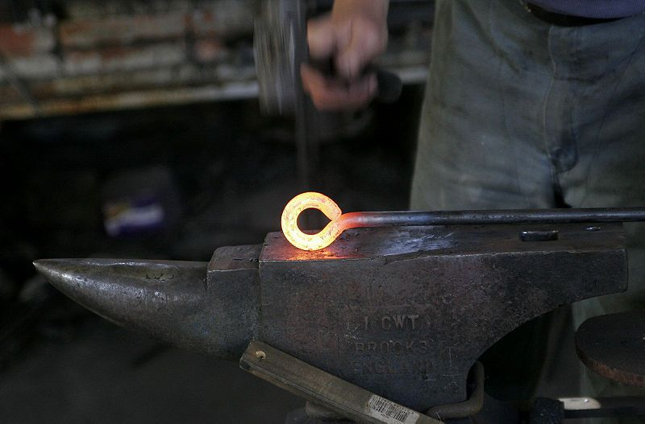
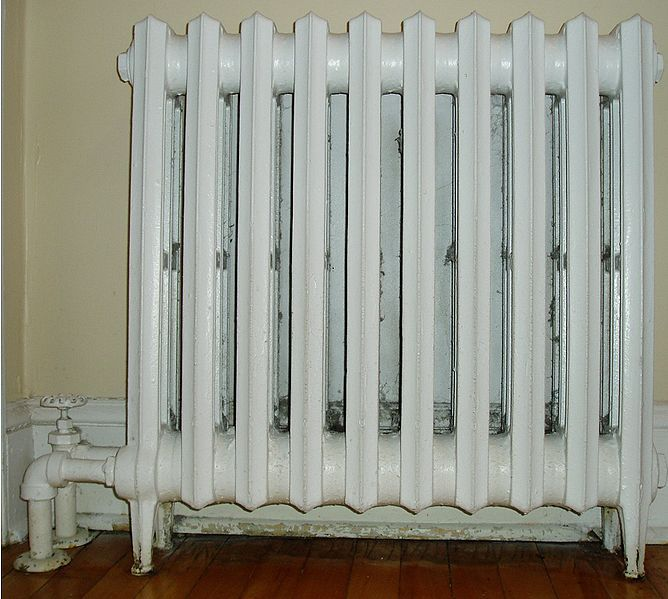
Kalorimetrická rovnice
vyjadřuje zákon zachování energie přenesené během přenosu tepla mezi soustavou a okolím:
Q1 = Q2 c1m1Δt1 = c2m2Δt2
První termodynamický zákon
vyjadřuje zákon zachování energie přenesené během dějů, při nichž dochází k práci a výměně tepla mezi soustavou a okolím:
ΔU = W + Q
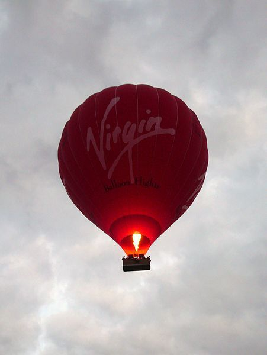
Šíření vnitřní energie
je přenos tepla, který se uskutečňuje třemi různými způsoby:
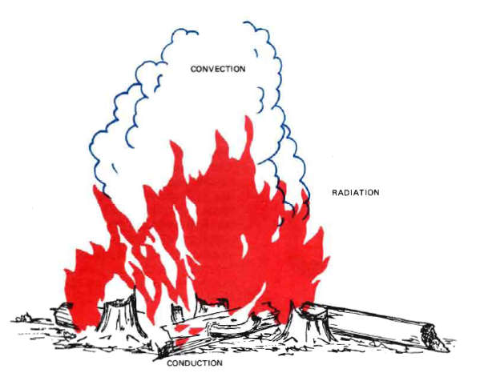
🔥 Vedení (kondukce)
je jev, při kterém se teplota prostředí vyrovnává. Odpovídá přenosu tepelného pohybu (kmitů) mezi molekulami a probíhá v pevné látce, kapalině i plynu.
Příklad: teplota tyče zahřáté na jednom konci se vedením tepla postupně vyrovnává.
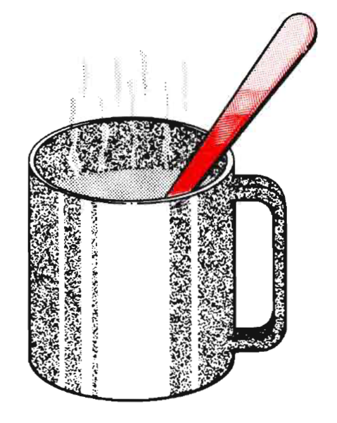
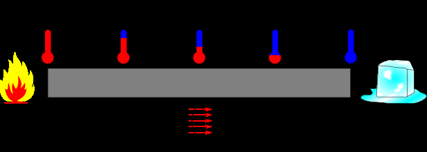
Vodiče a izolanty tepla
Tepelné izolanty jsou materiály, které špatně vedou teplo. Dřevo, korek, vzduch (přítomný mezi dvěma tabulemi izolačního dvojskla) jsou dobré izolanty.
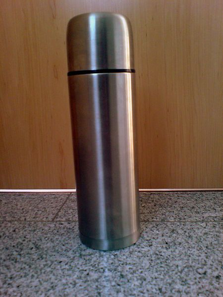
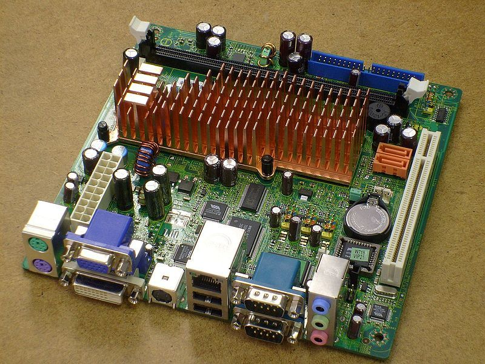
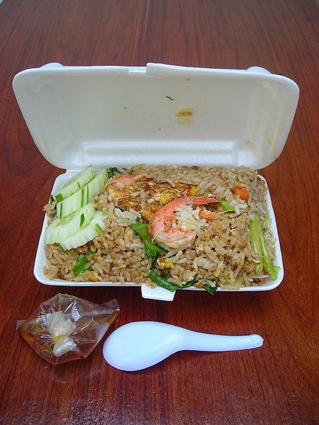
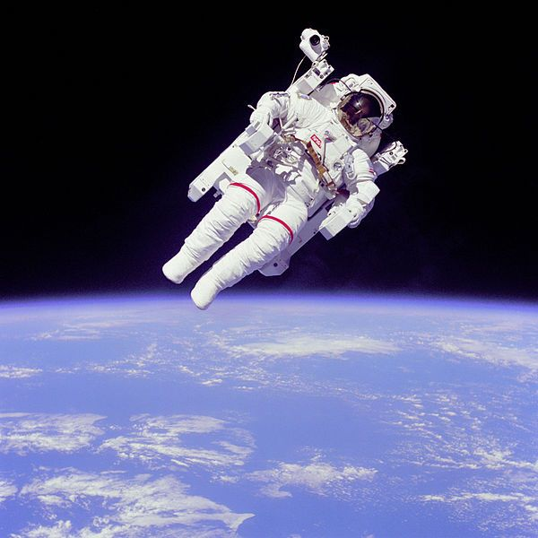
Tepelná vodivost λ
je fyzikální veličina charakterizující chování látek při přenosu tepla vedením. Vyjadřuje energii (množství tepla) přenesenou za jednotku plochy a času při teplotním spádu 1 stupeň na metr.
Dobré vodiče tepla bývají obvykle i dobrými vodiči elektrického proudu.
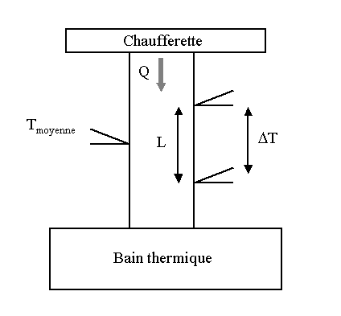
| materiál | λ [W·m⁻¹·K⁻¹] | materiál | λ [W·m⁻¹·K⁻¹] |
|---|---|---|---|
| diamant | 895 – 2300 | mramor | 2,08 – 2,94 |
| stříbro | 418 | žula | 2,2 |
| měď | 390 | zemina (suchá) | 0,75 |
| olovo | 354 | voda | 0,6 |
| zlato | 317 | dřevo | 0,16 |
| hliník | 237 | karton | 0,07 |
| zinek | 116 | korek | 0,04 |
| železo | 80 | polystyren | 0,036 |
hodnoty pro teplotu 20 °C
🌊 Proudění (konvekce)
je přenos tepla vyvolaný pohybem částic tekutiny. Probíhá v pohybující se tekutině.
Příklad: teplý (méně hustý) vzduch stoupá a přenáší teplo zdola nahoru.
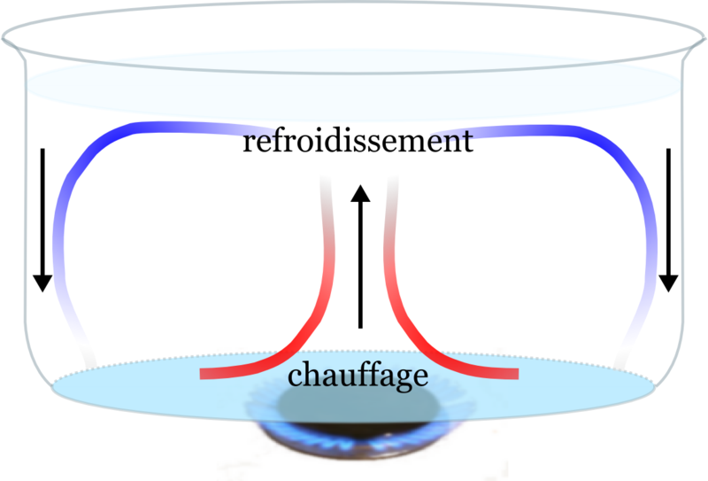
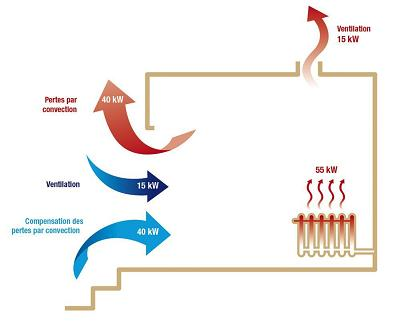
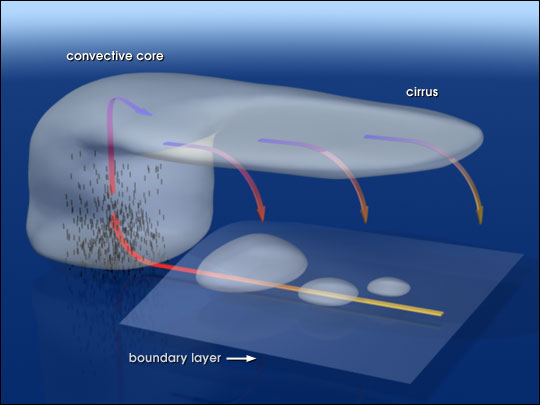
☀️ Záření (radiace)
je přenos tepla šířením elektromagnetických vln. Může probíhat ve všech prostředích, včetně vakua.
Příklad: Země je ohřívána zářením Slunce.
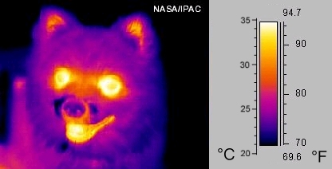
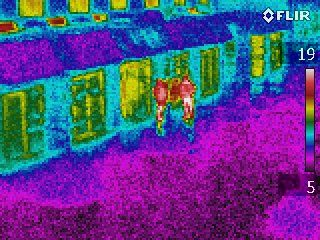
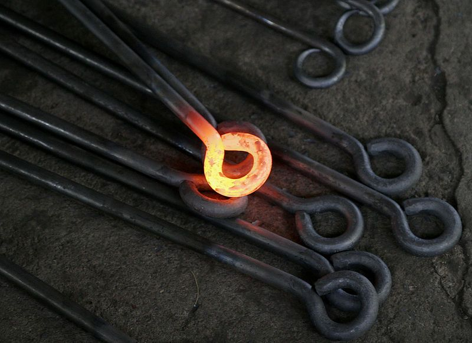
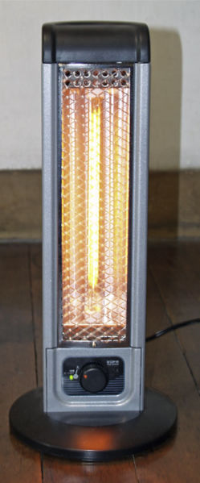
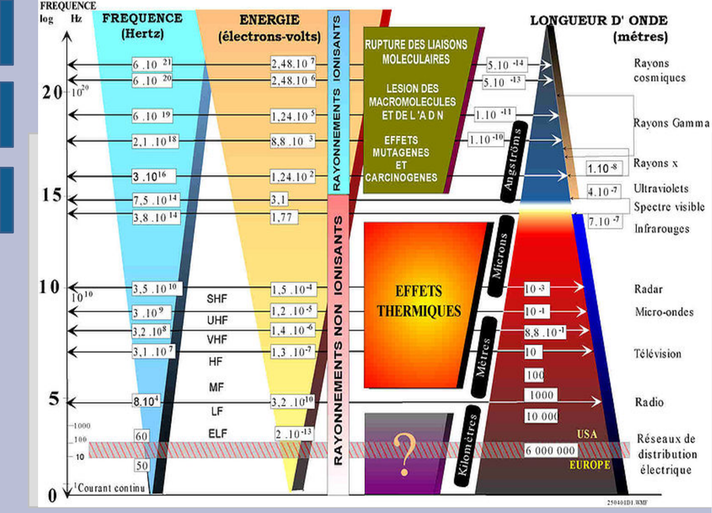